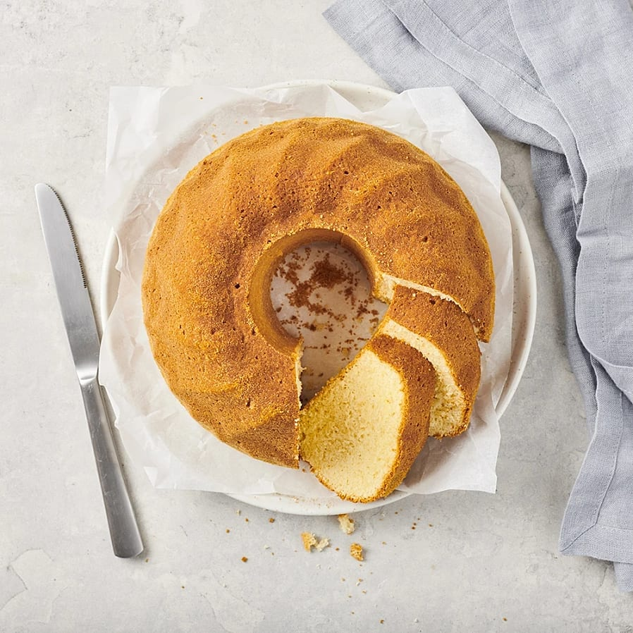

Spongecake

Just like momma used to make it!
A good and basic recipe.
This spongecake is a real classic, and simple to make. Always there whenever you need to whip something together fast.
Ingridients:
- Eggs (2 pieces)
- Sugar (2 dl)
- Butter (50 g)
- Milk (1 dl)
- Flour (3 dl)
- Baking soda (2 tsp)
- Vanilla sugar (1 tsp)
Steps:
- Set your oven on 175 °C.
- Whip the eggs together with the sugar until the mixture grows thick.
- Melt the butter and add the milk. Stir it until it becomes steaming hot.
- Combine the two mixtures togethers, stirring it all evenly.
- Mix the flour with the baking soda and vanilla sugar in a bowl
- Slowly stir the flour mixture into the liquid, until you are left with a smooth cake batter.
- Pour the cake batter into a prepared form, and put it into the oven for 35-40 minutes.
Enjoy!
Tip: You can exchange the milk with an equal amount of water.